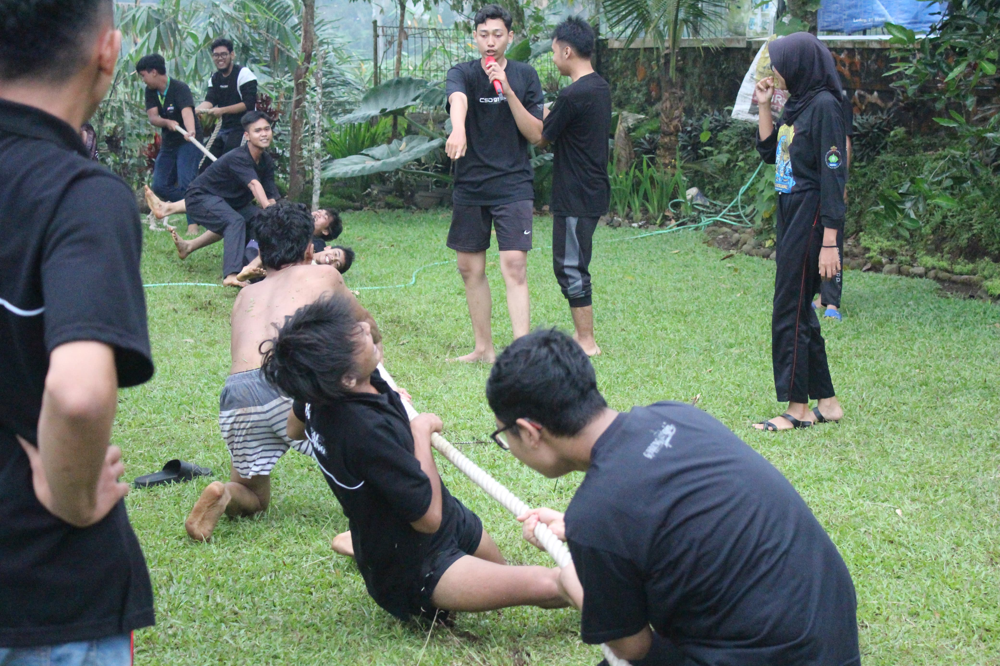
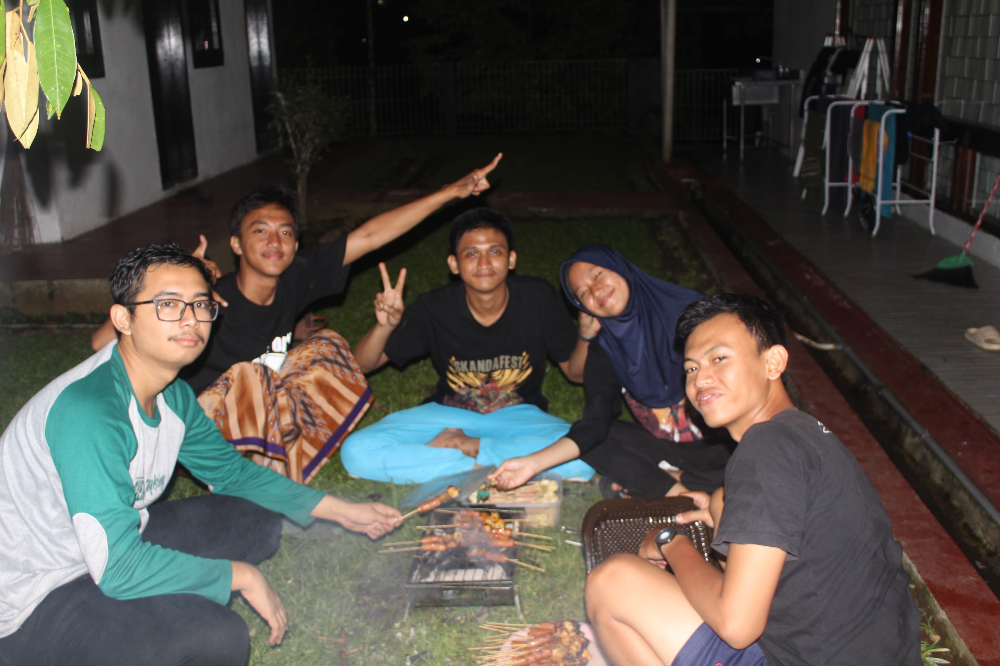
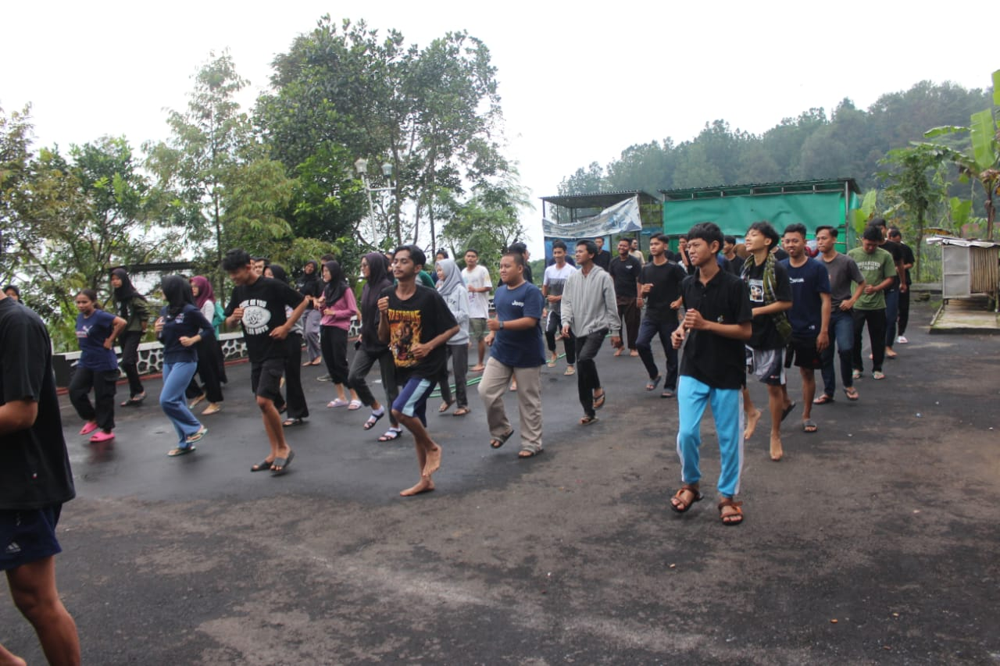
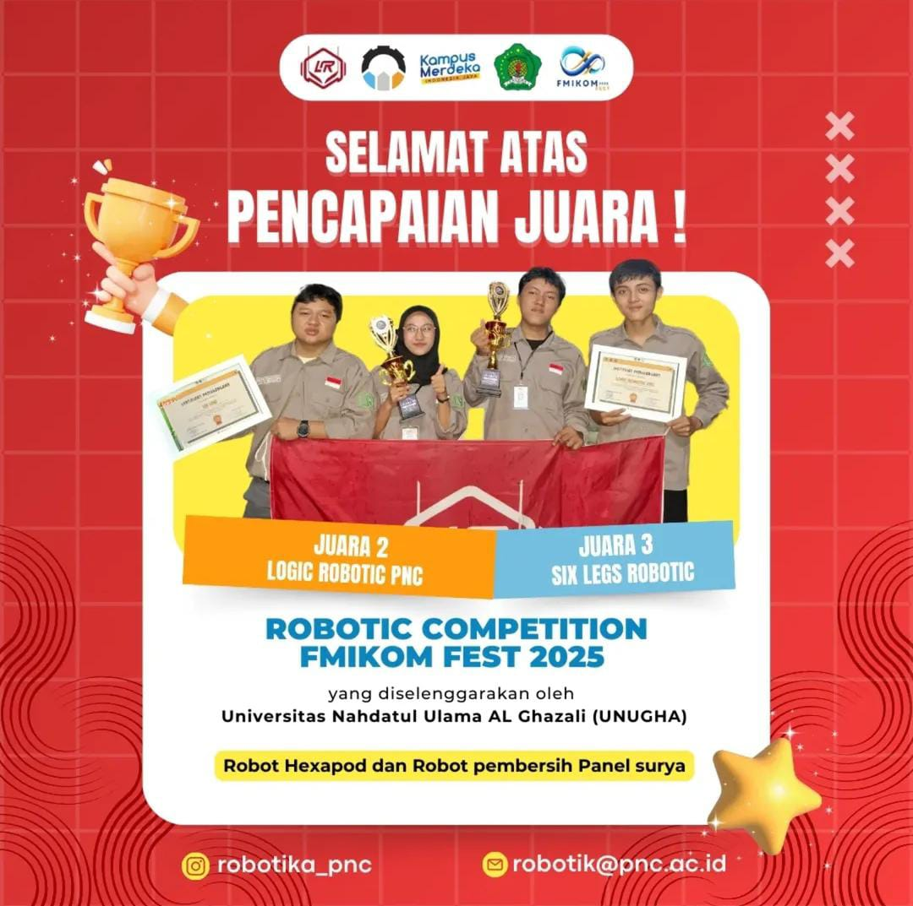
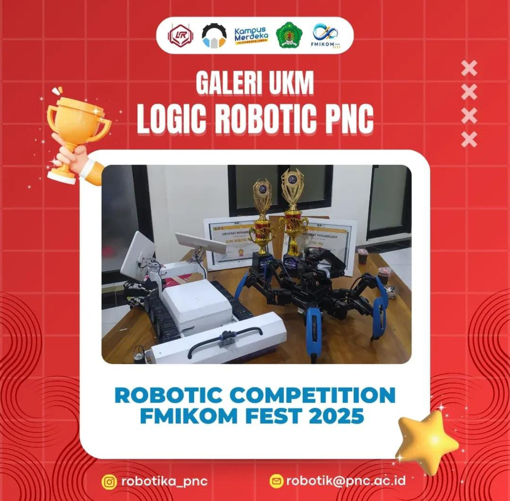
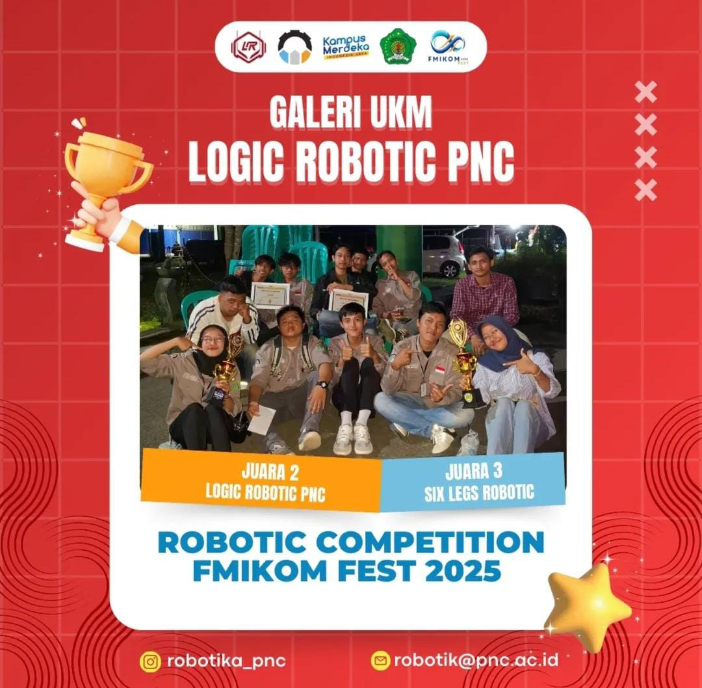
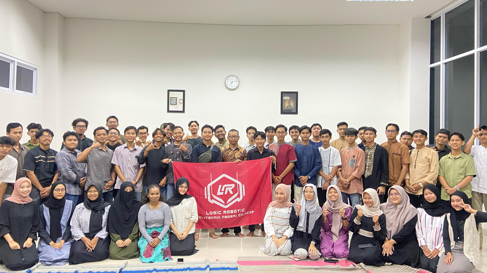
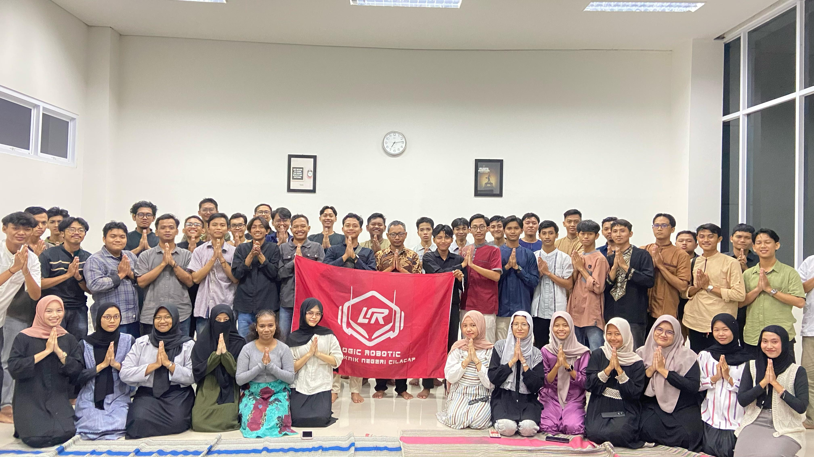
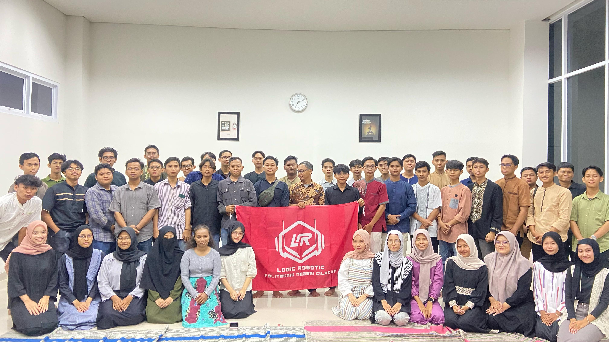

Makrab internal adalah kegiatan malam keakraban yang diselenggarakan oleh UKM Logic Robotic, untuk mempererat hubungan antar anggota. Tujuan utamanya adalah membangun rasa kebersamaan, solidaritas, dan kekeluargaan di antara anggota, serta memperkenalkan anggota baru dengan anggota lama dalam suasana yang santai dan menyenangkan. Makrab ini dilaksanakan selama 2 hari, dengan berbagai keseruan, diantaranya yaitu sharing session, outbound, inagurasi, dan api unggun.



Kontes Robot adalah kompetisi robotika tahunan yang diadakan suatu perguruan tinggi untuk mahasiswa dari berbagai perguruan tinggi lain. Kompetisi ini bertujuan untuk menguji kemampuan mahasiswa dalam merancang, membangun, dan mengoperasikan robot, serta mendorong inovasi di bidang robotika. Logic Robotic berhasil membawa pulang juara 2 dan juara 3 dalam ajang kontes robot dalam rangka FMIKOM FEST di UNUGHA Cilacap.



Buka bersama UKM Robotik adalah acara pertemuan sosial yang diselenggarakan oleh Unit Kegiatan Mahasiswa (UKM) Robotik di perguruan tinggi. Acara ini bertujuan untuk mempererat tali silaturahmi, berbagi ilmu pengetahuan, dan kegiatan positif lainnya, terutama terkait dengan dunia robotika.


